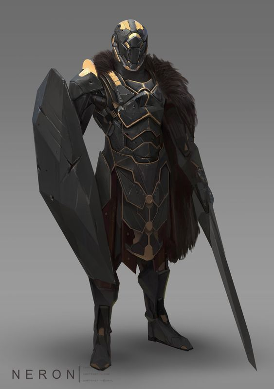
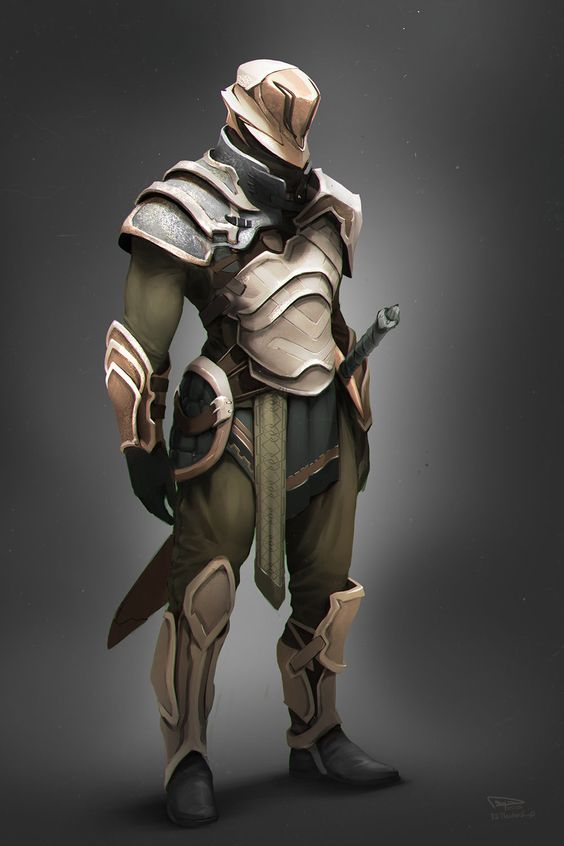
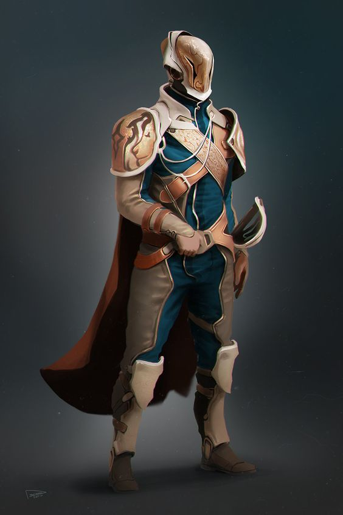
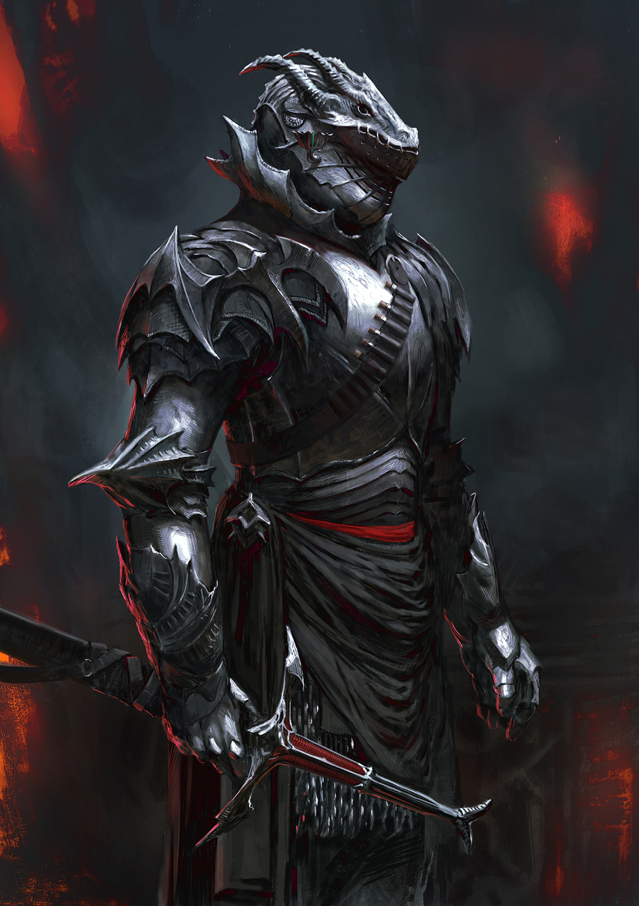

House Krayt-Dragon
House Krayt-Dragon is an ancient noble house of the planet Thrustra, with ties to the early kings and queens of Thrustra or so it was written as such. Ruling in the northern hemisphere of Thrustra their people are not foreign to hardships, nor the cold. The early rulers of the region quickly found their funds left to them by their royal ancestors dried up It was the third petty king, Thalvax Krayt-Dragon, that is credited with truly setting the house on their path to dominance They gained their wealth early on by mining, but quickly went into banking and finally trade. With the wealth their house produced they were able to place it back into their own people's education making many of those under their rule scholars, their healthcare well taken care of and their research and development well funded. All men and women under their rule were conscripted into a mandatory service of ten years, and a reservist for twenty years afterwards, to them there was a difference between citizen and a civilian seeing those that never served Thrustra simply as civilians lowest on the totem pole, though the ruling members of the house did not need to serve each one led their people into battle and for that they were beloved.
Currently the ruler of House Krayt-Dragon, is Maethreh Krayt-Dragon, who took over after the sudden death of her older sister Nali Krayt-Dragon and the abduction and assumed death of her heir Athena. Her sister known as a very kind and benevolent ruler, she loved children and truly feeling as though they were the future of her people the education in her petty kingdom was some of the best as she invested in the arts, and built a medium size university. Though her daughter Athena was a half-breed she was nearly just as beloved as her mother. Remembered as a sweet and soft spoken child, at a young age she already had a sense of justice and honour traits very few were surprised about given not only the lineage of her mother but the rumours of her father's lineage being a Jedi master. To lose both at the same time was hard for the people, but luckily her younger sister was there to help ease the pain. Though her sister is more known for her greed, arrogance, and wrath, she kept her people together during those dark days. She wasn't beloved, but she was well respected.
Krayt-Dragon Legionaires
"Strength in Sacrifice, Honour in Service, Purpose in Living" This creed of the Krayt-Dragon military emphasizes the idea that true strength comes from making sacrifices for a greater cause, while also finding purpose and meaning in one's life through service to others, such as friends, family, work, or nation in general. It highlights the importance of Living a life that is guided by honor, integrity, and selflessness, while pursuing a greater purpose beyond oneself. By embodying these values and living a life of service, military personnel can make a positive impact on the world and inspire others to do the same.
-

Legionaire
Though the army as a whole is called the Krayt-Dragon Legionaires, there is only one style of soldier that gets to hold the title itself. The Legionaire,host new recruits led by veterans, preferably ones that have seen action has the seniority. Armed with a blaster as a side arm, an electrified vibroblade and shield as their main weapon. Armed with metal mined from their own mines, light weight yet very durable.
-

Naval Pilots
-

Officers
-

Dragon's Guard